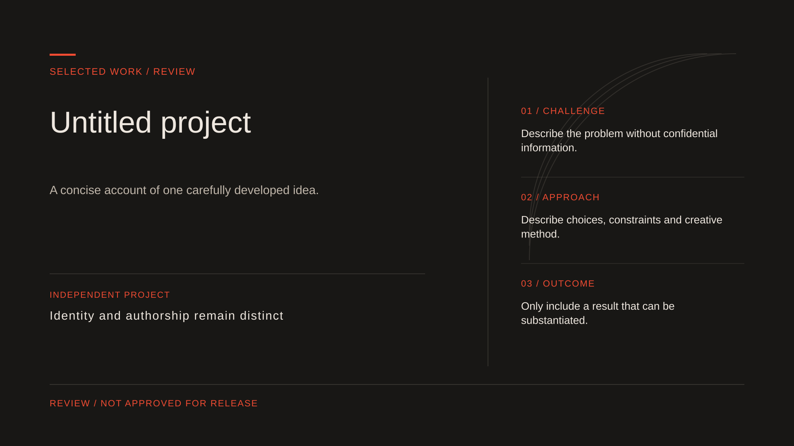
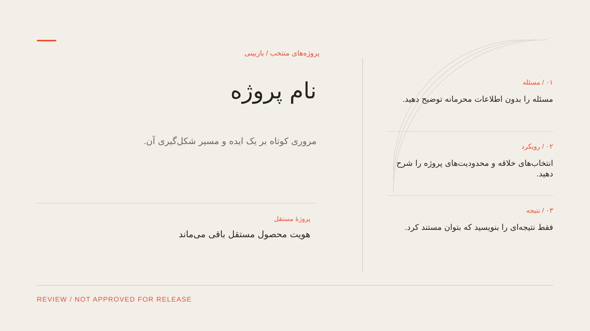

Classic / English
Vector composition. Sample project information only.
Download editable SVGHADES / PUBLIC WORKING LIBRARY / REVIEW
Two separate editable 1920×1080 SVG compositions. Use them as project-presentation source layouts; replace sample text and preserve independent brands.
REVIEW — not FINAL. No new HADES symbol or product mark has been drawn. The creator credit is intentionally hidden until rights are separately verified.

Vector composition. Sample project information only.
Download editable SVG
ترکیببندی برداری قابلویرایش؛ متنها نمونهاند.
دریافت SVGOnly #EF4B32 is an approved brand color. Neutral samples and fonts are proposed; no Mikhak claim. Open SVG in a compatible editor and edit existing text nodes. Some software may substitute fonts. Test glyph shaping and readability after editing. A project logo must remain the project's own original. HADES credit is permission-gated and subordinate, not default.
رنگ تأییدشده فقط #EF4B32 است. فونت و رنگهای خنثی نمونهاند. برای برندهای مستقل، لوگوی همان پروژه را با مجوز و بدون بازطراحی استفاده کنید. امضای سازنده پیشفرض خاموش است.